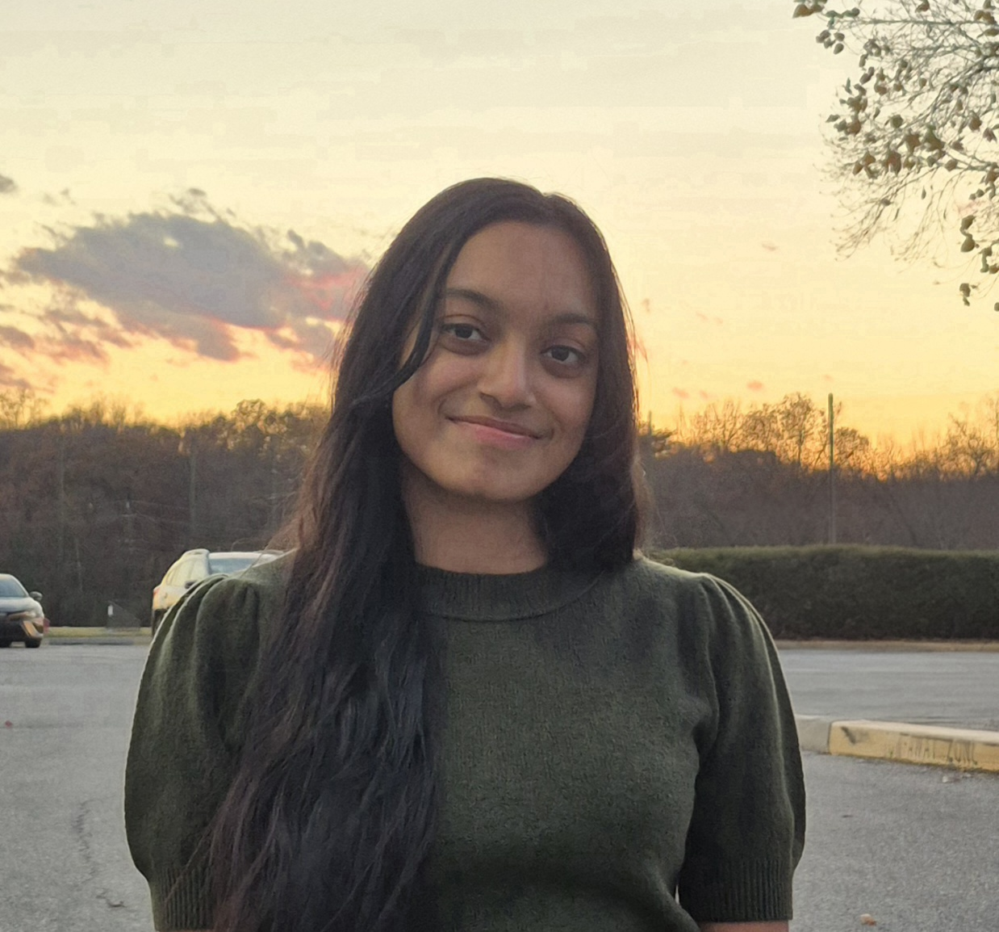

Hamshika Radhakrishnan
Building intelligent systems at the intersection of Data, AI & Research.
I’m an M.S. Data Science student at the University of Maryland, working across machine learning, deep learning, computer vision and research. I build systems that learn, reason, and create — exploring the fields of generative AI and agentic workflows to turn complex problems into practical solutions.
Open to Full-Time 2027 Opportunities
• Data Science • ML Engineering • AI Engineering • Data Analytics

01 · About
This is Me!
I enjoy solving complex problems with data — the kind that don't have a clean answer until you've spent real time inside the numbers. I like understanding how models work rather than treating them as black boxes, and then figuring out how to turn that understanding into something useful.
I'm interested in both the theoretical and applied sides of machine learning: understanding the idea, then building the system that brings it to life. Recently, that's meant exploring generative AI and agentic systems — architectures where LLMs reason, retrieve, and act rather than just generate text.
I enjoy taking ideas from concept to working system and building products end-to-end, from a raw dataset and a model to something that creates real value.
Academic Journey
Master of Science in Data Science
August 2025 – May 2027
Coursework
Bachelor of Technology in Computer Science with specialization in AI and ML
August 2021 – June 2025
Coursework
02 · Experience
What I've worked on
03 · Research
What I'm exploring academically
University of Maryland — Deep Learning for Groundwater / Hydrology
GRACE Terrestrial Water Storage Downscaling
Developed a Monte Carlo Dropout BiLSTM model in TensorFlow to downscale GRACE terrestrial water storage data from approximately 1° to 0.25° resolution, working with data spanning 2002–2022 across roughly 710 grid cells.
- Generated 175K+ grid-month estimates and reconstructed 1,451 missing observations
- Used Monte Carlo Dropout for uncertainty estimation, achieving strong agreement with GRACE observations
- Investigated drought-related indicators such as SPEI-12
- Compared model predictions against groundwater well observations
Learning Hydrogeologic Connectivity with Graph Neural Networks
Groundwater monitoring networks often contain spatial and temporal data gaps. This direction explores learning relationships between wells using spatial characteristics, aquifer characteristics, well characteristics, groundwater-level time series, and temporal relationships.
The longer-term idea is to combine Graph Neural Networks, uncertainty estimation, and active learning to identify locations where an additional groundwater observation would provide the most information.
04 · Projects
What I've actually built
05 · Skills